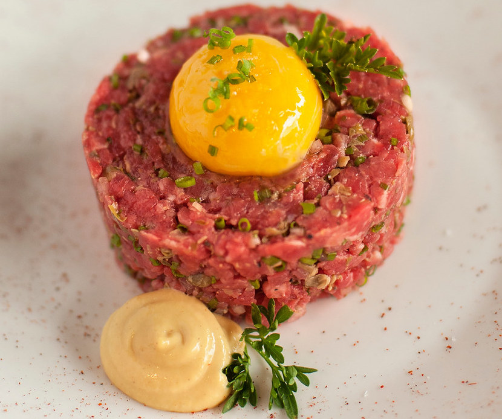
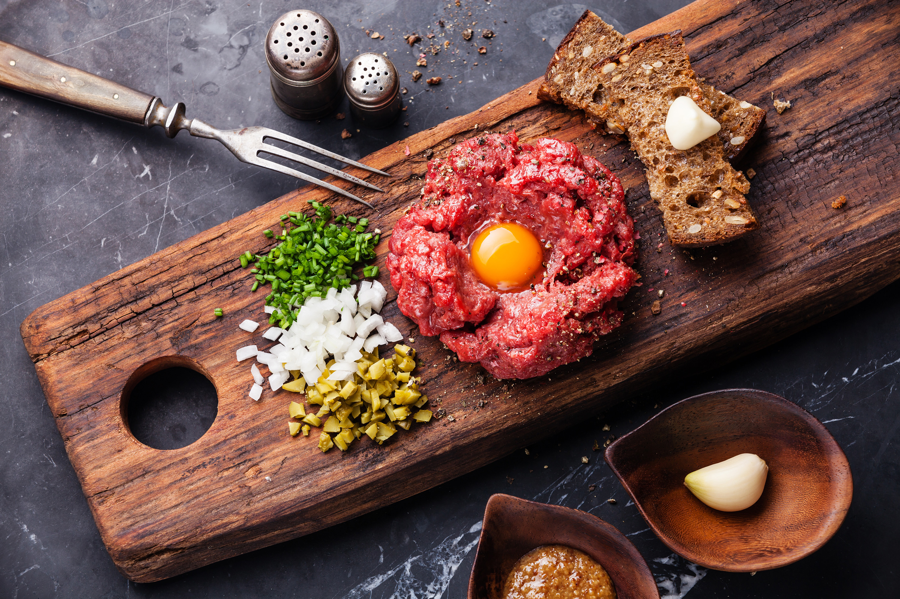
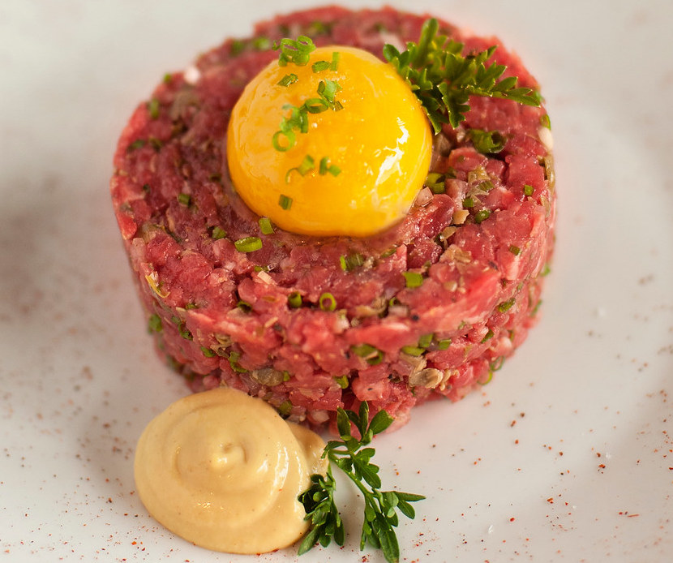
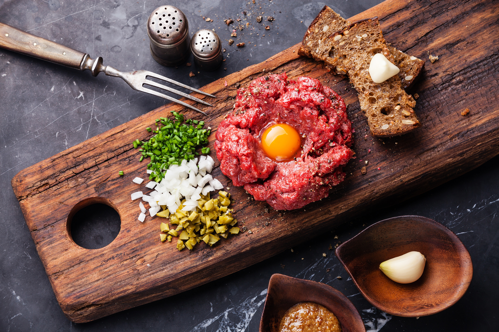

Steak tartare
Category:French food
This recipe is adequate for 2 people.
Ingredients for cooking:
- 1 kg of lamb meat, cut into cubes.
- 3500 gr top sirloin, cleaned and trimmed
- 2 large egg yolks
- 1/4 cup celery leaves, finely chopped and divided
- 1/4 cup light olive oil
- 2 tablespoons fresh parsley, finely chopped and divided
- 2 tablespoons small, brined capers, drained and unrinsed
- 6 tablespoons finely diced shallots
- 1 teaspoon freshly grated lemon zest
 



Cooking Directions:
- (1)Cut the steak into 1-inch cubes and park it in the freezer for 10 minutes.
- (2)Whisk together vinegar, dry mustard, and egg yolks in a bowl. Slowly stream in the oil while continuously whisking until emulsified. Whisk in shallots, capers, salt, and 2/3 of celery leaves and parsley.
- (3)Hand-chop meat or pulse in a food processor (in batches) for desired texture
- (4)Fold meat and dressing together with clean hands.
- (5)Plate using a pastry ring and garnish with reserved herbs and lemon zest.
For more information, below links are sugessted:
{kind=link}
{kind=link}
{kind=link}